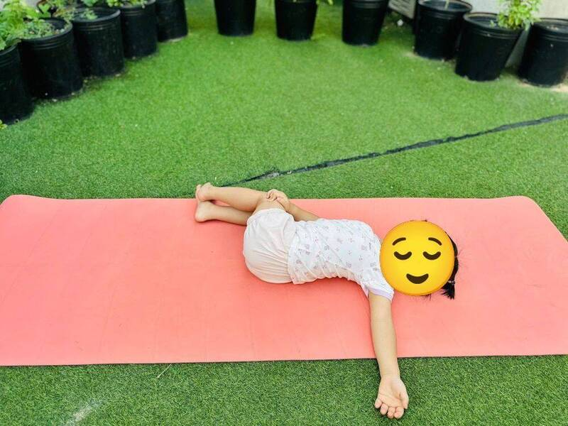

Chủ đề 49 · Yoga trước giờ ngủ
Mèo Mun chúc ngủ ngon
🌟 Bài học trong câu chuyện
Giới luật yoga: Brahmacharya – Biết điều độ, vừa đủ. Bé biết lúc nào chơi, lúc nào nghỉ, ăn vừa đủ no.
Kỹ năng sống: Đi ngủ đúng giờ, thư giãn trước khi ngủ.
1. Khởi động (2 phút)
Cả lớp ngồi xếp bằng thành vòng tròn. Cùng thở 3 hơi thở bông hoa: hít vào bằng mũi như ngửi hoa, thở ra bằng miệng thật chậm. Chắp tay trước ngực và chào nhau: “Namaste, chào các bạn!”
2. Câu chuyện: Mèo Mun chúc ngủ ngon (đọc cho bé nghe, 4 phút)
Cô đọc trọn câu chuyện cho bé nghe trước. Sau đó cô kể lại từng đoạn ngắn và cả lớp cùng tập 10 tư thế ở phần bên dưới.
Trời tối rồi. Mặt Trăng đã lên cao, các ngôi sao lấp lánh. Nhưng Mèo Mun vẫn muốn chơi tiếp, chạy nhảy khắp nhà, không chịu đi ngủ.
Mặt Trăng ghé qua cửa sổ, nói nhỏ: "Mun ơi, đến giờ ngủ rồi". Mun duỗi lưng: "Con chơi thêm chút nữa thôi mà". Ngoài vườn, bạn Bướm khép đôi cánh lại: "Chúc Mun ngủ ngon nhé".
Mun thấy mắt mình díp lại. Mun ôm gấu bông, nằm lên giường lắc lư nhẹ. Mặt Trăng dạy Mun cách thư giãn: vặn mình sang trái, sang phải thật thoải mái. Rồi giơ đôi chân lên cho chân nghỉ ngơi.
Mun nằm dang tay chân, nhìn những ngôi sao qua cửa sổ. Mun đặt tay lên bụng: hít vào, bụng phồng lên như quả bóng bay. Thở ra, bụng xẹp xuống. Một lần, hai lần, ba lần...
Mun thì thầm: "Ngủ đủ giấc, mai mình chơi tiếp". Rồi Mun ngủ say. Mặt Trăng mỉm cười: "Chúc Mun ngủ ngon".
3. Kể lại và tập 10 tư thế (6 phút)
-
 1
1Mặt trăng lên
🧘 Tư thế Trăng lưỡi liềm (Kneeling Crescent)
Lời kể khi tập: Mặt Trăng lên cao: "Đến giờ ngủ rồi, Mun ơi". Mình làm vầng trăng lưỡi liềm.
Cách làm: Bước dài một chân ra trước, gập gối trước, hạ gối sau xuống thảm, hai tay vươn cao qua đầu, ngực mở cong như vầng trăng lưỡi liềm. Mới tập thì chống hai tay lên viên gạch hai bên chân trước. Giữ 3 đến 5 nhịp thở.
-
 2
2Mèo duỗi lưng
🧘 Tư thế Mèo bò (Cat-Cow)
Lời kể khi tập: Mun duỗi lưng: "Con chơi thêm chút nữa thôi".
Cách làm: Chống tay và gối, hít vào võng lưng ngẩng đầu (bò "ò ò"), thở ra cong lưng cúi đầu (mèo "meo"). Giữ 3 đến 5 nhịp thở.
-
 3
3Bướm khép cánh
🧘 Tư thế Con bướm (Butterfly)
Lời kể khi tập: Bướm khép cánh đi ngủ. "Chúc ngủ ngon!"
Cách làm: Ngồi, áp hai lòng bàn chân vào nhau, hai gối mở sang hai bên, tay dang như cánh hoặc nắm bàn chân, gối đập nhẹ như cánh bướm. Giữ 3 đến 5 nhịp thở.
-
 4
4Em bé cuộn tròn
🧘 Tư thế Em bé (Child's Pose)
Lời kể khi tập: Mun thấy mắt díp lại.
Cách làm: Quỳ gối, ngồi lên gót chân, cúi người cho trán chạm thảm, hai tay duỗi ra trước hoặc để xuôi bên người. Giữ 3 đến 5 nhịp thở.
-
 5
5Gấu bông
🧘 Tư thế Em bé vui (Happy Baby)
Lời kể khi tập: Mun ôm gấu bông, lắc lư nhẹ.
Cách làm: Nằm ngửa, co hai chân lên, tay nắm bàn chân, lắc lư qua lại. Giữ 3 đến 5 nhịp thở.
-

6Vặn mình trên giường
🧘 Tư thế Nằm vặn người (Supine Twist)
Lời kể khi tập: Mun vặn mình sang trái, sang phải, thật thoải mái.
Cách làm: Nằm ngửa, co gối, đổ hai gối sang một bên, quay mặt nhìn sang bên kia. Đổi bên. Giữ 3 đến 5 nhịp thở.
-
🐈Ảnh tư thế đang cập nhật7
Ngọn nến nhỏ
🧘 Tư thế Chân lên tường (Legs up the Wall)
Lời kể khi tập: Mun đưa chân lên tường, cho đôi chân nghỉ ngơi.
Cách làm: Nằm ngửa, đưa hai chân thẳng lên trời (dựa vào tường nếu có), tay thả bên người. Giữ 3 đến 5 nhịp thở.
-
⭐Ảnh tư thế đang cập nhật8
Ngôi sao đêm
🧘 Tư thế Sao biển nằm (Lying Starfish)
Lời kể khi tập: Mun nằm dang tay chân, nhìn sao qua cửa sổ.
Cách làm: Nằm ngửa, dang rộng tay chân như sao biển, thả lỏng cả người. Giữ 3 đến 5 nhịp thở.
-
 9
9Bụng bóng bay
🧘 Tư thế Thở bụng (Belly Breathing)
Lời kể khi tập: Mun đặt tay lên bụng, hít vào bụng phồng, thở ra bụng xẹp.
Cách làm: Nằm ngửa, đặt tay lên bụng, hít vào bụng phồng như bóng bay, thở ra bụng xẹp xuống. Giữ 3 đến 5 nhịp thở.
-
10
Ngủ ngon
🧘 Tư thế Thư giãn (Savasana)
Lời kể khi tập: Mun thì thầm: "Ngủ đủ giấc, mai mình chơi tiếp". Chúc ngủ ngon!
Cách làm: Nằm ngửa, tay chân thả lỏng, nhắm mắt, thở thật chậm. Giữ 3 đến 5 nhịp thở.
4. Thư giãn (2 phút)
Các con nằm ngửa, tay chân thả lỏng, nhắm mắt lại. Cô nói nhẹ: “Hít vào thật chậm… thở ra thật chậm… Con nhớ lại câu chuyện vừa rồi, nhớ người bạn mình thích nhất trong truyện. Cơ thể con mềm như bông, nhẹ như mây.” Sau đó các con nghiêng người, từ từ ngồi dậy.
5. Trò chuyện cùng bé (1 phút)
Mèo Mun biết dừng chơi để ngủ đủ giấc. Biết lúc chơi, lúc nghỉ là Brahmacharya.
Cô hỏi các con:
- Con đi ngủ lúc mấy giờ?
- Trước khi ngủ con làm gì?
Kết thúc bằng lời chào “Namaste” và một nụ cười.
Lưu ý cho thầy cô và bố mẹ: Tập trên thảm, không tập ngay sau khi ăn no. Bé chỉ làm tới mức thấy dễ chịu, không ép bé. Tư thế đứng một chân có thể cho bé vịn tường hoặc vịn tay người lớn.